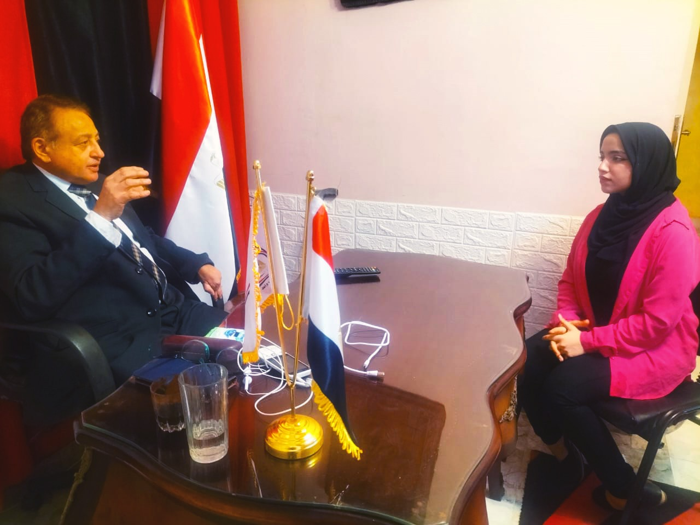

ترك: اثيوبيا متقدرش تمنع مجري المياه برضاها أو غصب عنها هتعديها لأنها قائمه علي بحيرة وإذا عملت كدة هتغرق
- مرحبا بكم في حوارنا الصحفي مع السيد حسن ترك رئيس حزب الاتحاد الديمقراطي لمناقشة قضايا سياسية مهمة في الوقت الحالي و سنركز في هذا الحوار على العديد من المواضيع السياسية ورؤيته السياسية ، و سنستكشف أيضا رؤية السيد ترك للوضع السياسي الحالي وتحليله للتطورات الجارية في البلاد.
- بدأت جمهورية مصر العربية في السنوات الأخيرة في مواجهة تحديات هامة تتعلق بملف سد النهضة فعلى مدى العقود الماضية، كانت مصر تعتمد بشكل كبير على مياه نهر النيل كمصدر هام للمياه العذبة التي تعتمد عليها في مجالات الزراعة والشرب والإنتاج الصناعي. ومع إقامة إثيوبيا لسد النهضة الكبير على النهر، أثار هذا الأمر قلقا كبيرا في مصر بشأن تأثيره على الحصص المائية للبلاد وسمحت الدولة بوجود سد النهضة عام 2014 ولكن هناك ثغرة لا يدركها الشعب المصري أن اثيوبيا بها 990 مليار متر مكعب من المياه إذا فهي ليست بحاجة لسد النهضة ، و وضح "اثيوبيا متقدرش تمنع مجري المياه برضاها أو غصب عنها هتعدي لأنها قائمه علي بحيرة وإذا عملت كدة هتغرق "، كما أن وجود بحيرة بها 200 كيلو جميعهم مياه كل هذا سيأثر على البنية التحتية، و من الممكن أن ينهار السد في أي لحظة لأنها ليست معجزة لبناء السدود و تأخذ المنطقة كلها مياه ورخوة جدا وجدير بالذكر أن السد العالي قوي جدا منذ وقت بنائه وهو من أضخم وأكبر و أمتن السدود على مستوى العالم كله، و نحن مستعدين كامل الاستعداد إذا حدث اي شيء في اي لحظه لن نتأثر. أما بالنسبة للاتفاقيات ،حتي الآن توجد الاتفاقيات القديمة سنه 34 و من المفترض أنه سيتم الاتفاق علي اتفاقيات جديدة ولكن لم يحدث حتي الآن ولم تحدد حصه مصر من المياه ولكن مع وجود هذه التأثيرات مازلت تأخذ مصر 55 مليار حصتها من المياه و اثيوبيا ليست قادرة علي منع وصول المياه الي مصر لأن ذلك سيعود عليها بالسلب .
- بالنسبة لوجود العديد من اللاجئين ان كلمه لاجئ في حد ذاتها لا تطلق في مصر فهذه الكلمة تطلق علي اصحاب الخيم وانما هنا هم أصحاب مشاريع و لديهم بيوت ، فمصر لم تغلق أبوابها لأحد عكس الدول العربية مثل المملكة العربية السعودية يجب أن يكون لك كفيل داخل الدولة وان أردت فتح شركه هناك يجب أن يكون للشريك السعودي أكثر من 51٪ وهذا الشيء لا ينطبق هنا لذلك يأتي للجميع الي مصر ، وبما أن يتم دفع التأمينات و الضرائب و ملتزم بالشروط المصرية فليست هناك مشكله إلا أنه يمثل عبء علي الصرف الصحي و استهلاكات للدولة و تم التغلب عليها عن طريق إنشاء الكباري و افتتاح مدن جديدة ب 6 اكتوبر وفي جنوب الصعيد كل هذه التطورات أحدثت طفره فمن 2014 لم تكن لتلك المدن وجود ولكن افتتاح هذه المدن ساعد علي تخفيف الضغط علي القاهرة، كما أنهم يعملوا علي بناء مسكن لكل خمس سودانيين وايضا لا ننسي أنه يوجد طفره من حيث زيادة عدد اللاجئين مع زيادة عدد السكان في الدولة ونحاول جاهدين حلها قريبا.
- علي الرغم من وجود فساد في قضايا التموين مثل السكر إلا أن مصر تتخذ إجراءات ليصل التموين للمواطنين و أكد علي أن التجار وقت أزمات الدولة لا تقف معنا معظمهم يستغل وضع الدولة لصالح تلبيه جشعة واستغلال الموقف لصالحه و استطاعوا التخزين في منافذ بعيدة عن الدولة بسعر أعلي و البعض يبيع بسعر منخفض لأننا سوق مفتوح ولم يعد هناك رقابه علي الأسواق مثل الماضي و إذا عادت ستعود الاشتراكية معها وجدير بالذكر أننا الدولة الأولي في العالم المصدرة للسكر ولكن عندما حدث الإرهاب في الصعيد أثر الوضع كثيرا علي الدولة ولكن نحن نضمن أن خلال السنه المقبلة لن يكون هناك ازمه في السكر وسينتهي لوجد طفرة زراعيه تحتوي علي اكثر من 23 فدان واضاف أن سينا بها مشاريع زراعيه مثل مخطط صرف صحى ببحر البقر في شمال سيناء الذي أقيم له مؤتمر بالعريش و تم الإعلان عن تمليك المصريين أكثر من مليون و نص فدان مع دفع مبلغ بسيط ،كما أن بحر البقر ساعد علي حل ازمه آبار المياه و وصول المياه الي جميع نواحي سيناء.
- هناك مشاريع تحدث في مصر أهمها مشروع رأس الحكمة هل تعتبر وسيله لتعزيز علاقات بين مصر و الدول الأخرى ؟
- المناخ في مصر هو مناخ آمن جدا للاستثمار فالمشاريع الكبيرة والاستثمارات الضخمة غالبا ما تسهم في تعزيز العلاقات الدولية في مصر و تعتبر هذه المشاريع فرصة لتوسيع التعاون الاقتصادي، وتبادل المعرفة والتكنولوجيا، وتعزيز الثقة بين الدول و مشاريع مثل رأس الحكمة قد تسهم في تعزيز العلاقات الدولية لمصر، خاصة إذا كانت تشجع على التعاون الاقتصادي وتعزز الاستثمار. بالإضافة إلى ذلك، هناك مشاريع أخرى تقوم بها مصر لتحسين علاقاتها مع الدول الأخرى، مثل مشروع تطوير الموانئ لتحسين البنية التحتية البحرية وتعزيز التجارة البحرية الدولية و مشتركه به مع مصر هي السعودية و ليبيا و اليونان و روسيا و اتفاقية شراكة الأمان لتعزيز التعاون الأمني ومكافحة الجريمة المنظمة ، والتعاون الثقافي والعلمي، وتوسيع شبكة العلاقات الدبلوماسية في النهاية الغرض هو تعزيز العلاقات بين الدول.
- البريكس لكي يتم تطبيقه سيأخذ وقت و سيعمل عندما يتم في البداية تبادل عملات بين الدولتين مثلا أن تقوم بالشراء من روسيا بالجنيه المصري و تقوم روسيا بالشراء من مصر بالروبل و سيترتب علي هذا الوضع تقويه العملة في مصر ولكن هذا الوضع لا يعجب امريكا لأنه سيأثر علي الدولار بشكل كبير وتعد ضربه لها قويه و لأنه فيما بعد بدل استخدام الخمس دول الدولار سيتم استبدالها بعمله البريكس لتبادل التجارة واضح أنه بعد 3 أو 4 سنوات من تبادل بين كل دوله و أخري بالعملة الخاصة بها وسيتم تطبيق البريكس .
التعليقات
بالتوفيق انشاء الله
اكتب تعليق